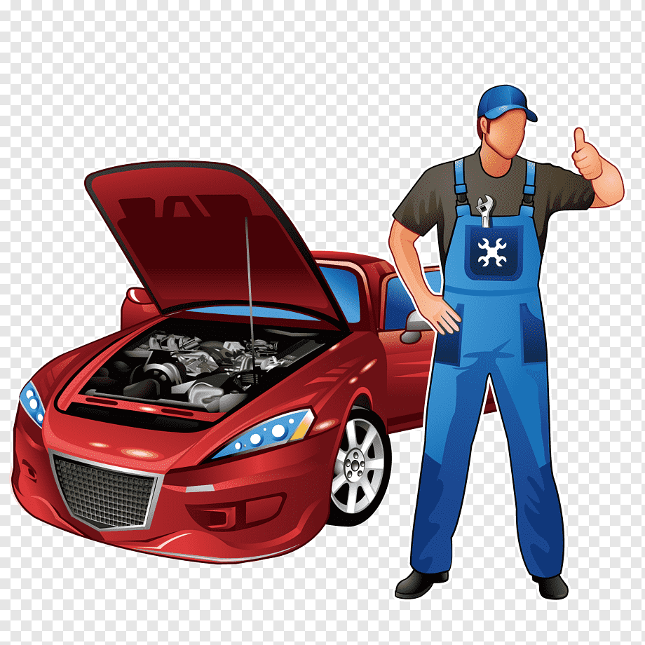
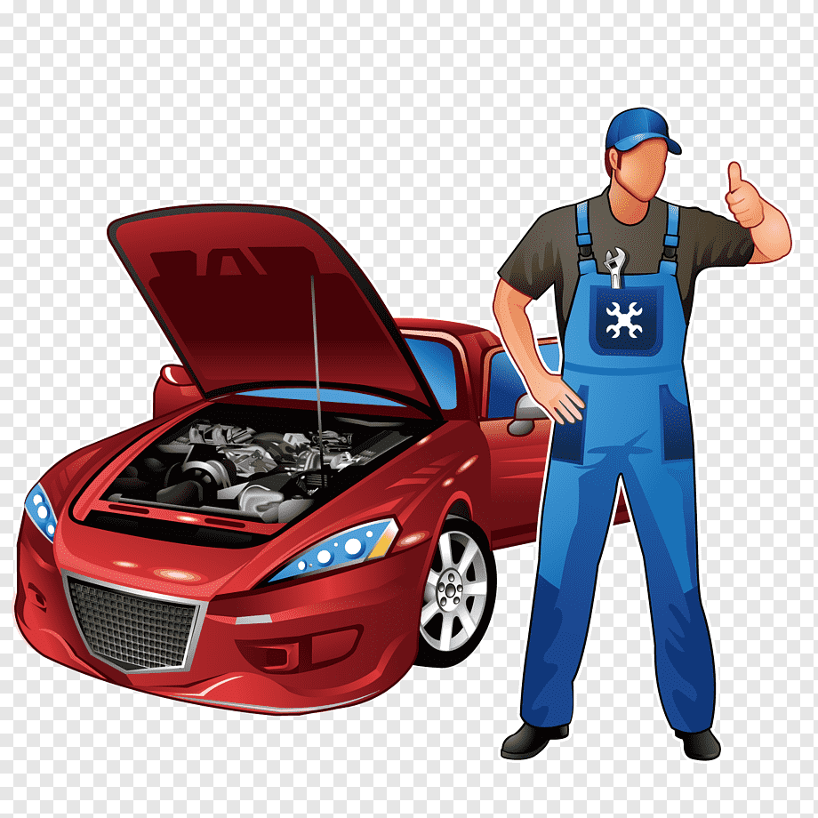

Somos un equipo joven y dinámico,
que cuenta con más de 20 años de experiencia en el sector.
Disponemos de recursos y medios suficientes como para
proporcionarle la solución más adecuada a su caso particular.
¡Confíe en nosotros y disfrute de un inmejorable vehículo!
Tenemos contacto directo con las pricipales
marcas, asefurandonos de recibir las pieza que utilizamos de
la propia casa de cada modelo de coche siempre a un precio
inmejorable.
Contamos con los mejores técnicos y Mecánicos en cada campo, también nuestra política medioambiental nos hace uno con la sociedad, para nosotros lo más importante en nuestra compañia son los 5 elementos que la componen:
Vosotros sois el motor de nuestro trabajo, por eso agradecemos que nos dejéis vuestros comentarios que nos ayudan a mejorar permanentemente. ¡Gracias!

En cuanto a la cita hicieron lo posible por adecuarse a mis horarios, una atención al cliente impecable, parece que respetan todos los protocolos covid.
Todo perfecto. Cita gestionada por internet en el momento, plazo de entrega y devolución del coche a rajatabla, atención superable y eficiente. Muy recomendable.
Un trato excelente, puntualidad tanto a la recogida como a la entrega del vehículo. Medidas de higiene y prevención respecto a la COVID-19. De 10.
En Record Autoak dedicamos todos nuestros recursos a un solo propósito: reparar y solucionar averías de vehículos de cualquier marca, modelo o antigüedad.
En Bizkaia damos servicio a más de 25.000 conductores cada año. Te presentamos al equipo que lo hace posible:
 Pilar Tellez
Directora General
|
 Christofer Arranz
Encargado de Administración
|
 Carmen & Oscar
Mecánicos
|

Antonio Gonzalez
Encargado de Residuos
|
Garantiza de por vida todos sus trabajos de sustitución. Esta garantía no será aplicable cuando los daños sean ajenos al servicio de sustitución y hayan sido provocados por causas no imputables a RKA.
RKA garantiza de por vida la corrección técnica de los trabajos de reparación,
y la satisfacción óptica durante un plazo de tres meses a contar desde el momento de
la reparación.
política de Calidad
La Política de Calidad de RecordAutoak S.L. está disponible para toda aquella parte
interesada que así lo requiera. Dicha petición deberá ser solicitada a través del
correo electrónico:
Rekord_Autoak@gmail.com
| LA CALIDAD DE LOS MATERIALES EMPLEADOS | LA CALIDAD DE LOS TÉCNICOS DE RKA |
|---|---|
|
En Record Autoak sólo utilizamos los mejores materiales, homologados y fabricados en conformidad con las normas establecidas por el Fabricante del Equipo Original (OEM) y comprado directamente a los fabricantes que también suministran a la industria automovilística, de modo que se garantiza así, que todos los materiales que instalemos sean de la misma calidad que la del original. |
Para garantizar una excelente calidad en nuestros servicios, nuestros técnicos
cuentan con amplia experiencia precedida de un proceso de formación riguroso y
continuado. De hecho, somos la única empresa del sector que cuenta con
la Certificación de Formación No Reglada ISO 29990:2010.
|
 
